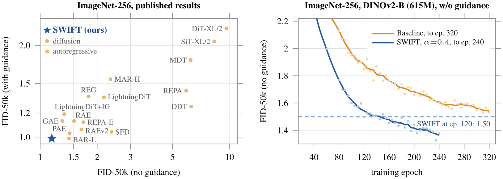
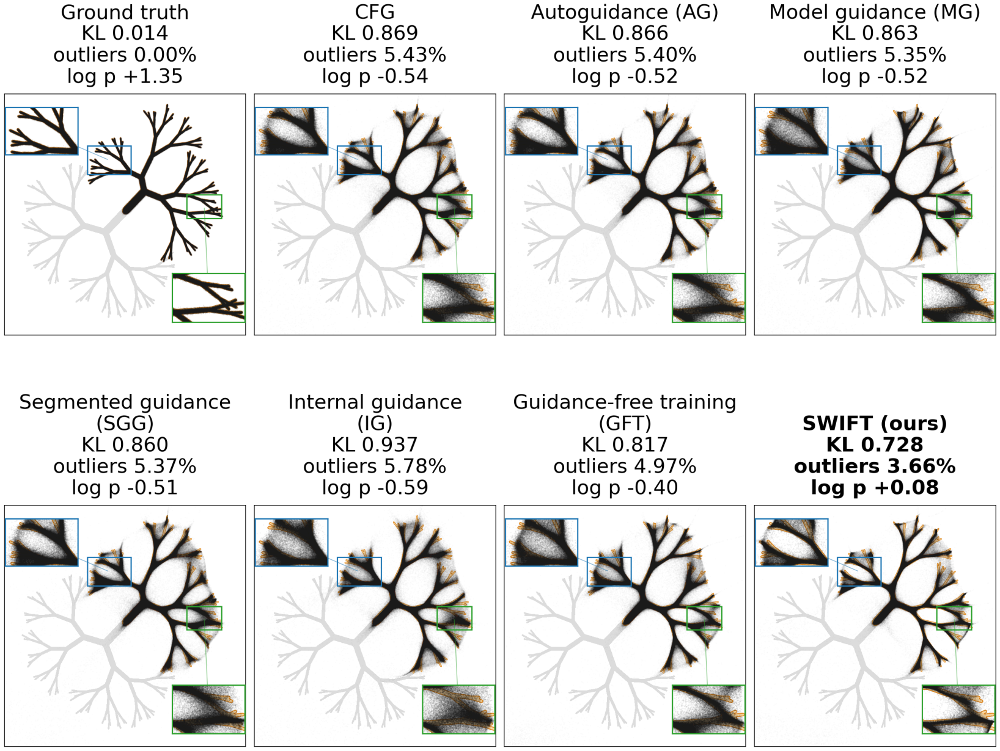
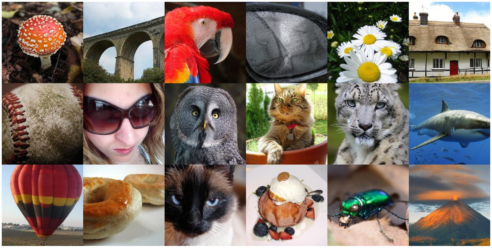
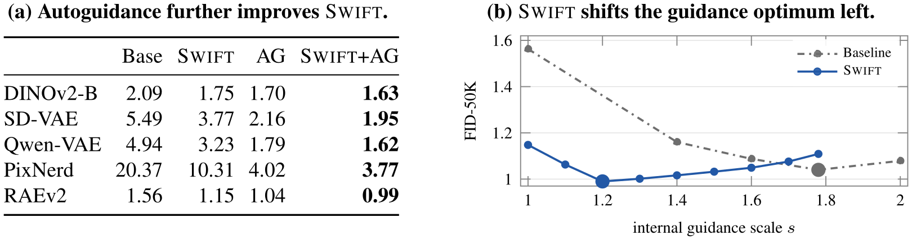
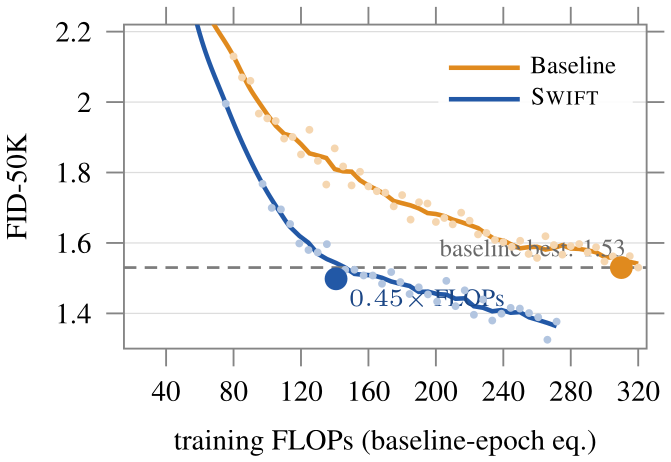
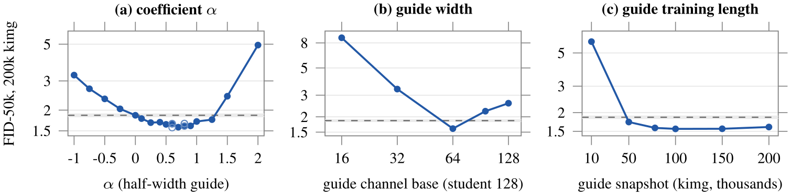

SWIFT: Self-guided Weak-to-strong dIFfusion models via Target extrapolation
1University of Michigan, Ann Arbor 2Alibaba Group 3University of California, Berkeley 4Nanjing University
TL;DR. A frozen weak denoiser can make a strong one better — at training time. SWIFT regresses the denoiser onto a target that is pushed past the clean sample, away from the weak model's prediction, so the weak-to-strong correction is learned into the model itself. Nothing changes at inference: same sampler, one network. On ImageNet-256 it reaches FID 1.15 without guidance and 0.99 with guidance.

Overview. Left: FID-50K on ImageNet-256 without and with inference-time guidance, for representative published models and for SWIFT (RAEv2 / DINOv3-L). Right: on the matched RAE / DINOv2-B configuration the gap stays open throughout training; SWIFT at epoch 120 is already below the baseline at epoch 320.
Guidance usually waits until sampling.
Diffusion models are trained with a plain denoising regression, yet many of the strongest results depend on guidance applied only at inference. (Karras et al., 2024) is the cleanest example: a deliberately worse denoiser — smaller, or trained for less time — defines a direction, and the strong prediction is pushed away from it at every sampling step. It works remarkably well, but the weak model has to be kept and evaluated whenever guidance is applied, and the trained denoiser itself never gets any better.
Autoguidance evaluates \(D_{\mathrm{AG}} = (1+s)\,D_{\mathrm{base}} - s\,D_{\mathrm{weak}}\) at every sampling step, where \(s\) is the guidance scale. Classifier-free guidance has the same form with the unconditional prediction in the place of the weak one. Both act on a denoiser whose training is already finished.
That suggests a different job for weak models: not teachers to imitate, but references to move away from. Our question was whether the weak-to-strong extrapolation can be moved from inference into training, so that the final denoiser itself absorbs the correction and the weak model can be thrown away afterwards.
SWIFT: extrapolate the target, not the prediction.
Ordinary training regresses the denoiser \(D_\theta(\bm{x}_t,\sigma_t)\) onto the clean sample \(\bm{x}_0\), whose population optimum is the . SWIFT keeps the loss, the weighting, the architecture and the sampler, and changes only what the denoiser is asked to predict:
With \(\bm{x}_t = \bm{x}_0 + \bm{\varepsilon}_t\), \(\bm{\varepsilon}_t \sim \mathcal{N}(\bm{0},\sigma_t^2\bm{I})\), the minimizer of \(\mathbb{E}\,\lambda(t)\|D(\bm{x}_t,\sigma_t)-\bm{x}_0\|^2\) over all functions is \(D^\star(\bm{x}_t,\sigma_t) = \mathbb{E}[\bm{x}_0 \mid \bm{x}_t]\). Tweedie's formula turns it into the score, \(\nabla_{\bm{x}_t}\log p_t(\bm{x}_t) = (D^\star - \bm{x}_t)/\sigma_t^2\), which is what the sampler integrates. In practice the sampler sees the denoiser reached after finite training, not \(D^\star\).
Here \(D_{\mathrm{weak}}\) is a frozen weak denoiser and \(\alpha \ge 0\) sets the strength; \(\alpha = 0\) is ordinary training. For \(\alpha \gt 0\) the target sits beyond the clean sample, on the side facing away from the weak prediction. It is the autoguidance formula with the observed \(\bm{x}_0\) in the place of the strong model's prediction, used as a regression target instead of at sampling time: conditioned on \(\bm{x}_t\), the target has mean \((1+\alpha)D^\star - \alpha D_{\mathrm{weak}}\), which is autoguidance applied to the ideal denoiser.
Target extrapolation. For each noisy input, the regression target is carried from \(\bm{x}_0\) past itself to \(\bm{y}_\alpha\), away from the frozen weak denoiser's prediction. The weak denoiser only defines the direction; it is never imitated.
The guide is nothing special. It is an ordinary denoiser, smaller and trained for fewer epochs — in our default ImageNet recipe about a quarter of the parameters and half the epochs of the main model — and it is frozen before the main run starts. It is evaluated without gradients, which costs about per step, and discarded after training. We call the method self-guided because the correction comes from a weaker version of the same model on the same task: no external teacher, no auxiliary head, no label dropout or unconditional branch. The construction is the same for conditional and unconditional generation, and velocity-predicting models apply it to the .
Let \(\rho\) be the ratio of guide to main-denoiser forward FLOPs (\(\rho \approx 0.26\) on DiffusionBench). A baseline step is one forward and one backward pass, about three forward-equivalents; SWIFT adds one guide forward pass and no backward pass through it, so a step costs \(1+\rho/3 \approx 1.09\) times the baseline. Pretraining the guide for \(T_g\) epochs costs about \(\rho T_g\) baseline-equivalent epochs (\(\approx 10\) for the default 40-epoch guide), paid once and shared by every run that reuses the guide.
Velocity is affine in \(\bm{x}_0\) for a fixed \(\bm{x}_t\), so extrapolating the clean target and converting it to a velocity is the same as extrapolating the velocity target directly: \(\bm{v}_{\mathrm{SWIFT}} = (1+\alpha)\,\bm{v} - \alpha\,\bm{v}_{\mathrm{weak}}\), with \(\bm{v}_{\mathrm{weak}}\) the frozen guide's prediction. This is how SWIFT is applied to the DiffusionBench and RAEv2 models.
Keeping the guide frozen matters. Related training-time methods — Model Guidance, Segmented Guidance, Guidance-Free Training, Internal Guidance — build their correction from predictions that keep changing as the model trains; some of them can be rewritten pointwise into an extrapolated-target form, but the reference moves. With a frozen guide, the target for a given clean sample, noise draw and noise level never changes during training. Co-training the guide instead ended worse in our experiments, and so did schedules on \(\alpha\).
What the correction looks like.
On a two-class, tree-shaped 2D distribution with thin branching support (after the fractal example of Karras et al.), SWIFT follows the narrow branches more faithfully than classifier-free guidance, autoguidance and four training-time guidance methods, each with independently tuned settings: it has the lowest KL (0.728, against 0.817 for GFT, the strongest baseline), the fewest outliers (3.66% against 4.97%) and the only positive log-likelihood (+0.08 against −0.40).

A 2D toy distribution. Ground truth and samples from seven methods; the insets zoom into branching regions. Lower KL and outlier rate and higher \(\log p\) are better.
Why a deliberately biased target can give a better denoiser.
This should look suspicious. The population optimum of the standard loss is the posterior mean, and the SWIFT target is biased away from it: with unlimited training, SWIFT can only lose, since its converged solution misses \(D^\star\) by \(\alpha\,(D^\star - D_{\mathrm{weak}})\).
The resolution is that nobody trains to convergence. After a finite budget the baseline has learned only part of the posterior mean, and an earlier, weaker checkpoint has learned even less of the same directions. Moving the target away from that checkpoint amplifies precisely the components that are still underfit, and the main model absorbs part of the extra signal within the same budget.
We make this exact for Gaussian-mixture data when training is modelled as . For a learnable mode with eigenvalue \(\lambda\), the baseline trained for time \(T\) is short by a factor \(e^{-T\lambda}\), while the SWIFT correction adds \(\alpha\,(1-e^{-T\lambda})\,e^{-T_g\lambda}\), where \(T_g \lt T\) is the guide's training time. The two terms have opposite signs, so every sufficiently small \(\alpha \gt 0\) strictly reduces the error to the posterior mean (Theorem 1 in the paper): there is a nonempty interval \(0 \lt \alpha \lt \alpha^\star\) on which SWIFT beats matched standard training, with no assumption of separated clusters or low-rank means. Push \(\alpha\) too far and the correction overshoots — the U-shape we see in practice.
Write \(L\) for the kernel integral operator on \(L^2(P_{\bm{x}_t})\) and \(H_s = I - e^{-sL}\) for the response of zero-initialised gradient flow after time \(s\). Then \(D_{\mathrm{weak}} = H_{T_g}D^\star\), \(D_{\mathrm{base}} = H_T D^\star\) and \(D^{(\alpha)}_{\mathrm{SWIFT}} = H_T\big[(1+\alpha)D^\star - \alpha D_{\mathrm{weak}}\big]\). On a kernel mode with eigenvalue \(\lambda \gt 0\) the signed error of \(D^{(\alpha)}_{\mathrm{SWIFT}}\) is
$$ \underbrace{-\,e^{-T\lambda}}_{\text{baseline shortfall}} \;+\; \underbrace{\alpha\,(1-e^{-T\lambda})\,e^{-T_g\lambda}}_{\text{SWIFT correction}} $$times the coefficient of \(D^\star\) on that mode; modes the kernel cannot learn receive no correction. The statement compares population squared error to the posterior mean at one noise level and equal main-model training time; the guide's own training is not counted, and the result does not model finite-sample target noise.
The same thing happens with a real network. On a Gaussian mixture where \(D^\star\) is known in closed form, at equal capacity and equal steps, the estimate of \(D^\star\) implied by a SWIFT-trained network is 12–17% closer to the truth than the ordinarily trained one, on all 40 seeds — although the guide itself is a poor model, three to seven times further from \(D^\star\) than the baseline. SWIFT does not learn from a better model; it learns away from a worse one.
Results on ImageNet-256.
We use one fixed recipe everywhere — \(\alpha = 0.4\), a half-width guide trained for half the epochs and then frozen — and apply it to 18 DiffusionBench configurations spanning VAE latents, representation-autoencoder latents, end-to-end learned latents and pixel space. Unguided FID drops in every configuration, by 16–49% (median 31%); with guidance retuned separately for each model, guided FID drops in every configuration as well.
| FID-50K, no guidance | FID-50K, with guidance | |||
|---|---|---|---|---|
| Representation | Baseline | + SWIFT | Baseline | + SWIFT |
| RAE: DINOv2-B | 2.09 | 1.75 | 1.98 | 1.59 |
| VAE: SD-VAE | 5.49 | 3.77 | 2.32 | 1.81 |
| End-to-end: Qwen-VAE | 4.94 | 3.23 | 1.50 | 1.40 |
| Pixel: PixNerd | 20.37 | 10.31 | 4.17 | 3.38 |
| RAEv2: DINOv3-L | 1.56 | 1.15 | 1.04 | 0.99 |
Matched pairs. Each row shares the architecture, schedule and sampler; only the regression target differs. First four rows: 615M-parameter models on DiffusionBench, 80 epochs, classifier-free guidance. Last row: RAEv2 with DINOv3-L, 875M parameters, 160 epochs, internal guidance.

Samples from the 0.99-gFID model (RAEv2 / DINOv3-L), 50-step ODE sampler with retuned internal guidance.
Complementary to inference-time guidance.
SWIFT absorbs part of the weak-to-strong correction, not all of it. Autoguidance still improves a SWIFT model, and SWIFT plus independently retuned autoguidance is the best of the four options in every configuration we tested. At the same time the preferred amount of guidance moves: on RAEv2 the optimal internal-guidance scale drops from 1.78 for the baseline to 1.20 for SWIFT, while the best guided FID improves from 1.04 to 0.99. The model already carries part of the extrapolation, so less of it is needed at sampling time.

SWIFT and autoguidance. (a) Autoguidance improves SWIFT further in every configuration. (b) On RAEv2, SWIFT shifts the optimum toward weaker inference-time guidance.
Training cost, and the gain over longer training.
SWIFT costs about 9% more FLOPs per epoch for the frozen guide, plus roughly ten baseline-equivalent epochs to pretrain it. Charging both, SWIFT at epoch 120 already surpasses the best FID the DINOv2-B baseline reaches in 320 epochs (1.50 against 1.53) using 0.45× the training FLOPs; on RAEv2, epoch-50 SWIFT beats the epoch-160 baseline at 0.40×. Nor does the gap close with training: continuing the DINOv2-B pair to 240 epochs, SWIFT leads at all 36 evaluations and the margin widens from 0.12 to 0.26 FID (1.64 → 1.35 at the end). The same holds on every DiffusionBench configuration for which we recorded the full trajectory.

Same-FLOPs comparison on DINOv2-B. Guide pretraining and the per-step overhead are both charged to SWIFT.
How to choose \(\alpha\) and the weak guide.

CIFAR-10 ablations. (a) The coefficient. (b) The guide width, with the student at channel base 128. (c) The guide's training length.
- The coefficient is broadly U-shaped. On CIFAR-10 the favorable region sits around \(\alpha = 0.7\)–\(0.9\); on ImageNet, \(\alpha \in [0.5, 1.0]\) clearly beats the control. We used \(\alpha = 0.4\) for every ImageNet configuration without tuning; a small sweep over moderate positive values is enough. Negative \(\alpha\) speeds up the first part of training but does not change the final quality.
- The guide should be weaker than the student, but competent. A half-width guide is best: at \(\alpha = 0.8\) on CIFAR-10, going from a full-width to a half-width guide improves FID from 2.58 to 1.60, while much smaller guides degrade quickly. Half width is also the best choice on ImageNet.
- Once the guide is competent, its training length barely matters. Past a threshold, results are insensitive over a wide range; on ImageNet, freezing the guide earlier can even help.
- Keep it fixed. Co-training the guide, changing \(\alpha\) during training, and online variants are neutral or harmful. A frozen half-width guide and a fixed moderate \(\alpha\) is the whole recipe.
Future directions.
- The regression target turned out to be a cheap place to intervene. SWIFT writes one correction into it; what other useful corrections can be written there?
- What makes a good weak reference, beyond “smaller and trained for less time”? The theory says the guide should be short on the same directions as the student; a sharper characterisation could give better guides at the same cost.
- The construction only touches the target, so it carries over to other diffusion settings as they are — video, audio, and continuous diffusion language models are natural next steps.
- Theory beyond the kernel regime: finite samples, nonlinear training dynamics, and the link between a better denoiser and better samples.
BibTeX
@article{he2026swift,
title = {{SWIFT}: Self-guided Weak-to-strong Diffusion Models via Target Extrapolation},
author = {He, Yanjin and Shen, Cuifeng and Lei, Wanzhou and Li, Maohua and
Lan, Tao and Liu, Kan and Tang, Hanlin and Qu, Qing},
journal = {arXiv preprint},
year = {2026}
}